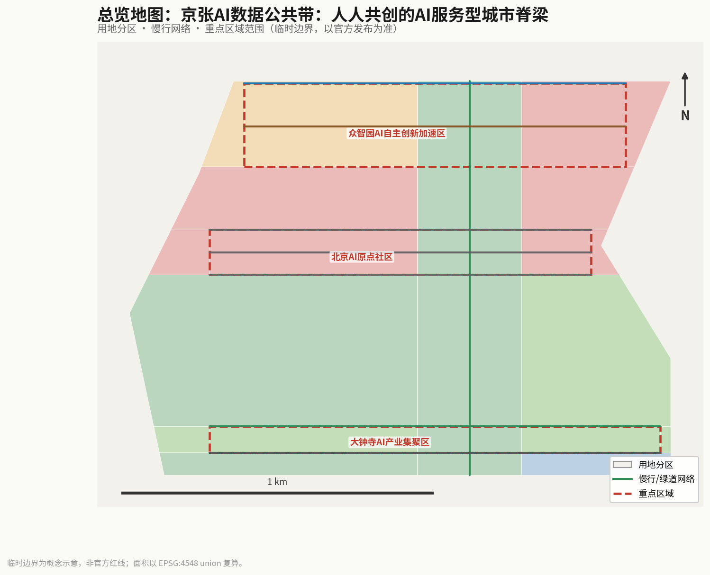
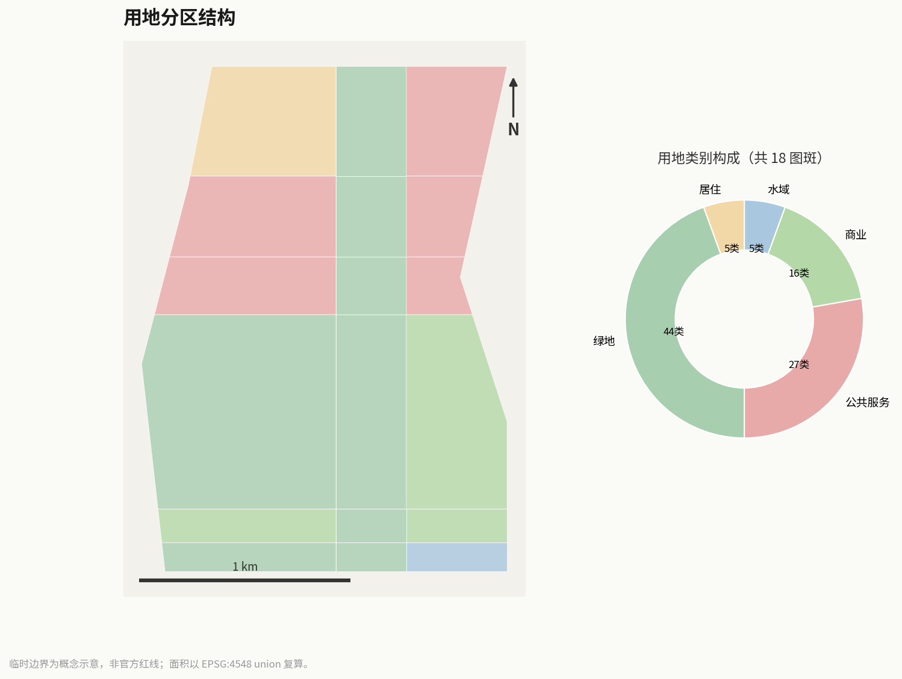
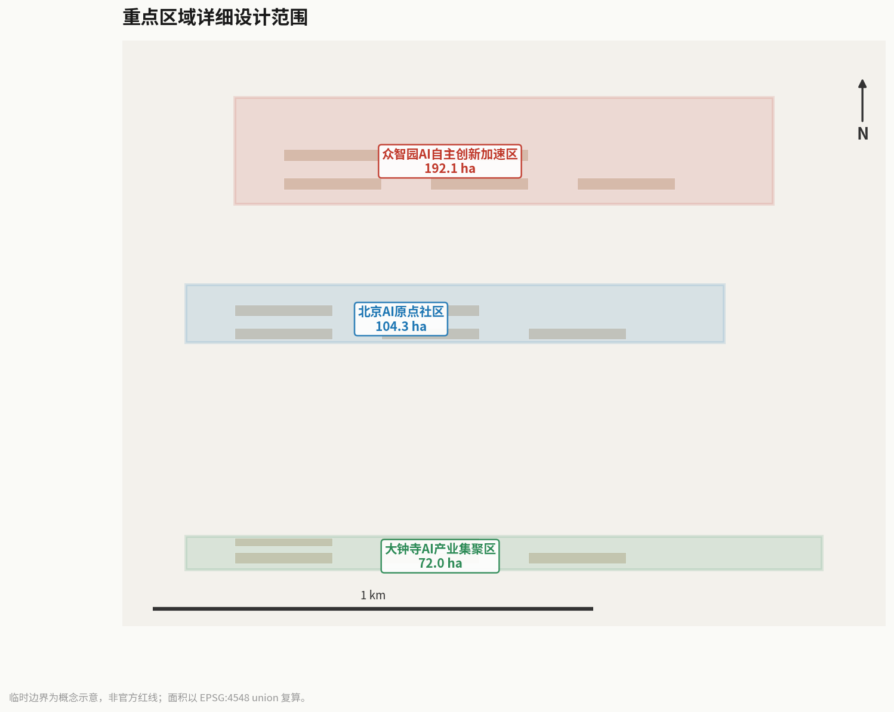
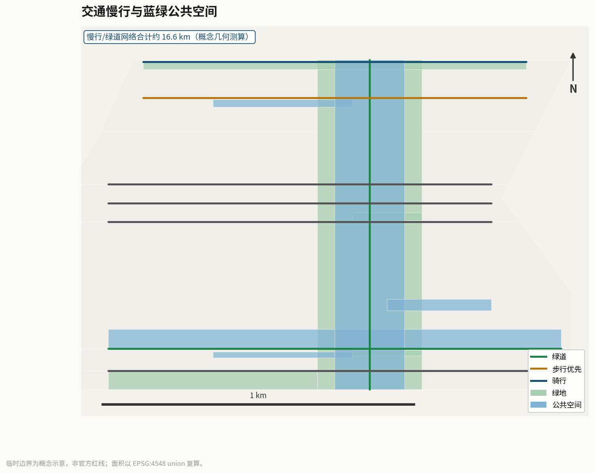
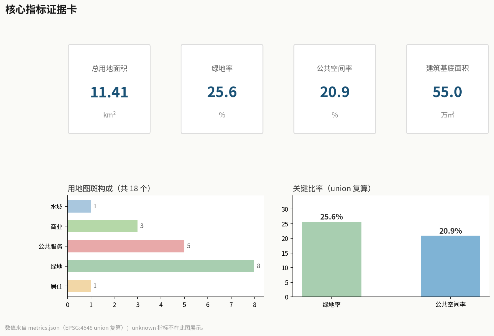

Jingzhang AI Civic Data Commons: A Co-Created Service-Oriented City Spine
Restructuring the Jingzhang AI Innovation Belt into a service-oriented city spine built on 'data as a public good': one spine (the open civic-data axis), three hearts (Zhongzhiyuan data factory, AI-Origin community service living room, Dazhongsi enterprise data port), and many nodes (citizen-participatory AI service pods). Public data opens along the belt; citizens and developers co-create AI services at co-creation nodes; the digital platform and physical space are designed as one, forming a governable, experienceable, and replicable civic-data commons.
Jingzhang AI Civic Data Commons: A Co-Created Service-Oriented City Spine
Design Basis and Source List
This proposal takes the Centennial Jingzhang AI Innovation Belt International Urban Design Open Call Prequalification Announcement, issued by the Haidian Branch of the Beijing Municipal Commission of Planning and Natural Resources, as its primary basis Source, supplemented by the agent-oriented taskbook Source, and uses the provisional coarse boundaries, key areas, enumerations, metrics, and source lists registered by maintainers in brief/site-package/ as machine-readable evidence Source. On the data-governance dimension, the proposal also invokes the Data Security Law of the PRC, the Personal Information Protection Law of the PRC, the Public Data Resource Development and Utilization Pilot Notice, and the Beijing Digital Economy Promotion Regulation as the compliance framework for public-data opening and citizen AI-service co-creation Source Source Source.
The site extends from the North Fifth Ring Road in the north to Xizhimen Outer Street in the south, and from Xueyuan Road / Xitucheng Road in the east to Wanquan River Road / Heqing Road in the west. The coordinated research scope is approximately 43.6 km², the overall design scope approximately 11.4 km², and the key detailed-design scope approximately 368.4 ha. The three key areas, from north to south, are the Zhongzhiyuan AI Autonomous Innovation Acceleration Area (approx. 192.1 ha), the Beijing AI-Origin Community (approx. 104.3 ha), and the Dazhongsi AI Industry Cluster (approx. 72.0 ha) Spatial data Spatial data.
Provisional boundary disclaimer: The site boundary used in this proposal is a provisional coarse boundary (provisional boundary), derived from the announcement's textual extents and area constraints Source. It must not serve as an official redline, an approval basis, or a precise area-recalculation basis. When the official precise boundary is released, all layer areas and metrics must be recalculated.
All spatial proposals are conceptual recommendations, reference schemes, or subjects for further professional deepening; they do not replace formal planning and do not constitute government-approved conclusions Standard. All scenarios involving public-data opening, personal-information processing, and AI decision-making must follow the principles of data minimization, explainability, human review, and auditability, and must not treat unauthorized personal profiling or non-public data as service preconditions Standard.

Three-Level Scope Framework
Coordinated Research Area (approx. 43.6 km²)
The coordinated research area covers the Haidian Jingzhang railway corridor and its surroundings; its core task is to build a world-class AI innovation ecosystem. From the civic-data-commons perspective, the central question at this level is: how can Haidian's government data, city-operations data, industry data, and public-service data be organized into a "civic-data spine" flowing along the Jingzhang corridor, so that data — like green space and slow-mobility — becomes a city infrastructure usable by everyone Source. This level focuses on data-ecosystem strategy, the open-data catalogue, and regional synergy-network analysis; it does not involve specific spatial design.
Overall Design Area (approx. 11.4 km²)
The overall design area covers the urban districts and industrial zones within 1–2 km of the Jingzhang heritage park, requiring urban-design depth at the regulatory-plan level Spatial data. Within this area the proposal builds a "one spine, three hearts, many nodes" spatial structure:
- One spine — the Jingzhang civic-data axis: along the heritage-park green belt it lays an open-data fiber and slow-mobility composite corridor, linking the three hearts north to south; it is the physical axis of data flow and public experience.
- Three hearts — three data-service core nodes, respectively carrying data production, citizen service, and enterprise service functions.
- Many nodes — a network of AI service pods distributed along the belt, covering scenarios such as health navigation, legal aid, eldercare companionship, and education assistance.
Key Detailed-Design Area (approx. 368.4 ha)
The three key areas are the three "service hearts" of the civic-data commons, each with a differentiated role Spatial data Spatial data. The key-area scope requires depth at the planning-integrated-implementation level, clarifying functional programs, building scale, retain-renovate-demolish classification, public-space connectivity, and transport organization Depth.

Coordinated Research Area: Industry and Future City Research
Overall Concept and Naming System
The proposal advances "Jingzhang AI Civic Data Commons" as its overall concept, centered on the thesis that "data is a public good." The naming system is a set of combinable concepts: the trunk "Civic Data Commons" corresponds to the Jingzhang corridor; "Service Heart" corresponds to the data-service function of the three key areas; "Service Pod" corresponds to the participatory AI-service nodes distributed at stations and in communities; "Co-Creation Ring" corresponds to the mechanism by which citizens and developers jointly produce services. The Logo direction proposes combining open-data streams (parallel flowing lines) with the Jingzhang railway-gauge symbol (reflecting the historical lineage), conveying the visual character of "open, flowing, co-created, governable."
Three Positionings, Five Functions, and Three-Areas-Two-Wings Coordination
The proposal implements the taskbook's three positionings (Centennial Jingzhang Cultural Belt, Urban AI Life-Experience Belt, AI-Integration Innovation Belt) and five functions (data opening, service co-creation, industry cultivation, public experience, governance demonstration) Source. In the three-areas-two-wings coordination, the three key areas respectively take on data production (Zhongzhiyuan), citizen service (AI-Origin Community), and industrial transformation (Dazhongsi); the Xiaoyuehe scenario wing carries public-experience routes, and the Zhongguancun service wing carries the developer community and policy consulting Standard.
Interlock with Sibling Proposals on the Same Corridor (v8)
The value of a data commons is "making every use of data visible." Four sibling proposals on the same Jingzhang heritage corridor (submitted by the same author) are both data sources and users of the receipt mechanism; the following are design-coordination proposals, subject to each party's detailed design [E:DATA-CROSS-INTERLOCK]:
- With robot-comobility (Cross-Section Grammar × Co-Mobility Signaling): every block/degradation event of the robot signal timetable produces a dispatch record, proposed to be registered under the data-receipt rules with destination and retention period; data-timetable stations may share the delivery hubs' public screens, so citizens see "when data opens" and "when robots come" on one screen.
- With heritage-spine (Ren-Track × three conservation principles): heritage archives and conservation-monitoring data are proposed for the public-data opening list, with every use generating an auditable receipt — traceable whereabouts of heritage data extend the "distinguishability" principle into the digital layer.
- With silver-accessibility (Silver Relay × intergenerational connection stations): health and mobility data involved in elderly services are among the most sensitive public-data categories, proposed for priority coverage by receipt rules and the objection channel; timetable-station screens provide large-print versions so elders can see where their data went.
- With ai-civic-services (Three-Guarantees-One-Verification × accountability spaces): the accountability stands' completion records (de-identified) are proposed for display on the data timetable — "what was done, who did it, what data was used" becomes visible at once; service accountability and data accountability meet on the same public wall.
Global Civic-Data and AI-Service Co-Creation Case Studies
The proposal draws on six leading global cases to extract transferable design principles Source:
| Case | City | Core mechanism | Inspiration for Jingzhang |
|---|---|---|---|
| DECODE | Barcelona | Citizen-sovereign data + open-source tools, letting citizens control data and co-create | Data sovereignty and a co-creation toolkit |
| Helsinki AI Register | Helsinki | Public registry of city AI services, explainable, feedback-able, auditable | A registration and disclosure system for AI service pods |
| Seoul Digital Twin | Seoul | City digital twin + citizen-participatory public-service simulation | Public-participation mechanism for the governance feedback ring |
| Smart Nation | Singapore | National data infrastructure + convenient AI services | Top-level architecture of the civic-data spine |
| Shanghai Public Data Opening | Shanghai | Tiered open government data + innovation application contests | Open-data catalogue and hackathon mechanism |
| Hangzhou City Brain | Hangzhou | City-operations data hub + multi-scenario AI services | Mapping between data hub and service scenarios |
The transferable value of these cases: public data requires four elements to work in concert — institutions (tiered opening + registration disclosure), space (reachable service nodes), tools (a co-creation toolkit), and participation (citizen hackathons + feedback mechanisms) — rather than mere technology deployment Depth.
Overall Design Area: Urban Renewal and Regulatory-Plan-Level Urban Design
Spatial Structure
The overall design area builds a "one spine, three hearts, many nodes" structure. The "spine" runs about 8 km north–south along the Jingzhang heritage-park green belt, overlaying open-data fiber, a slow-mobility axis, and a public-experience route; the "three hearts" each place a data-service core within a key area; the "many nodes" place AI service pods at 8 rail stations and 5 community nodes, with a first batch of 6 station groups, forming a 500 m walkable service network Spatial data Spatial data.
Land Use Layout
Building on the announcement and current land-use classifications, the layout flags parcels carrying data commons cores, service pods, and co-creation centers as "AI-service-function" land (a design recommendation subject to formal regulatory-plan confirmation). There are 18 land-use zones in the overall design area, grouped by land-use category consistent with the figures: 8 green/open-space (category 14), 5 public-service (08), 3 commercial-service (05), 1 residential (07), and 1 water (16) Spatial data. The green ratio is about 25.6% and the public-space ratio about 20.9%; green and public space jointly carry the openly accessible functions of data stations and AI service pods Metric Metric.
Urban Renewal Strategy
The renewal strategy follows a "retain – renovate – activate" principle: retain the Jingzhang railway heritage fabric and existing residential areas; renovate low-efficiency industrial spaces along the line into data-service functions; activate station-adjacent and community nodes as AI-service-pod pilots. All retain-renovate-demolish classifications are conceptual recommendations, subject to formal regulatory-plan and ownership confirmation Depth [assumption:A-CONTROLS-001].

Detailed Design of Key Areas
Zhongzhiyuan AI Autonomous Innovation Acceleration Area — Data Factory and Developer Co-Creation Center (approx. 192.1 ha)
Role: The production-side heart of the civic-data commons, carrying public-data aggregation, cleansing, opening, and developer co-creation. Structure: Along the Qinghe front it places a "Data Factory" (data aggregation and open platform), a "Developer Co-Creation Center" (hackathons and prototyping space), and a "Standards & Governance Demonstration Zone" (open demonstration of data security and AI ethics). AI scenarios: security-governance sandbox, edge-compute testing, low-carbon innovation gallery. Risk: compliance authorization for data aggregation and the Qinghe ecological redline must be confirmed before formal deepening Spatial data.
Beijing AI-Origin Community — Citizen Service Living Room and Neighborhood Data Stations (approx. 104.3 ha)
Role: The service-side heart of the civic-data commons, providing AI public services usable by all community residents. Structure: Around the near-campus community it places a "Citizen Service Living Room" (one-stop AI public-service hall), "Neighborhood Data Stations" (community-level data query and feedback terminals), and an "Open-Source Release Hall" (display of citizen co-created outcomes). AI scenarios: health service navigation, education assistance, eldercare companionship, legal aid. Risk: campus boundaries and ground-floor tenancy must be coordinated with universities Spatial data.
Dazhongsi AI Industry Cluster — Enterprise Data Service Port and Commercial Co-Creation (approx. 72.0 ha)
Role: The industry-side heart of the civic-data commons, providing enterprises with data compliance, policy consulting, and commercial co-creation services. Structure: Around Dazhongsi Station it places an "Enterprise Data Service Port" (data-element circulation and compliance services), an "International Roadshow Living Room," and a "Smart Consumption Experience Center." AI scenarios: enterprise-service Copilot, data-element reception hall, agent display. Risk: station integration and four-quadrant pedestrian connectivity must be coordinated with transport authorities Spatial data.
AI Innovation Ecosystem, Personas, and AI+ Scenarios
User Personas
The proposal establishes 5 user personas, each with clear data sovereignty and privacy boundaries Source:
| Persona | Typical needs | Spatial response | Privacy boundary |
|---|---|---|---|
| Community resident | Health navigation, government errands, neighborhood services | Citizen service living room, neighborhood data stations, AI service pods | Aggregate statistics only; no personal profiling |
| Silver-aged elder | Eldercare companionship, accessibility, chronic-disease management | Elder-friendly service pod, barrier-free slow mobility, data board | Health data used only with the individual's or family's authorization |
| Entrepreneur / developer | Compute access, open data, testbed | Developer co-creation center, data factory, edge-compute station | Use of open data requires registered purpose |
| Civil servant / governance actor | Data board, agent inference, risk early warning | Governance feedback ring, public-data disclosure wall | Decisions require human review and an audit trail |
| University faculty / student | Tech transfer, cross-campus collaboration, teaching practice | Near-campus tech-transfer street, open-source release hall | Campus data and research outcomes require authorization |
AI Scenario Cards
The proposal designs 12 AI scenario cards; SC-06, SC-08, and SC-11 are AI industry test/validation scenarios, each requiring a human-review mechanism Source:
| No. | Scenario | Location | Users | Data / privacy boundary |
|---|---|---|---|---|
| SC-01 | AI health service navigation | AI-Origin community service pod | Residents, elders | Health data authorized by the individual; aggregate statistics |
| SC-02 | AI one-window government services | Citizen service living room | All citizens | Government data opened by catalogue; human review |
| SC-03 | AI education assistance | Near-campus tech-transfer street | Students, teachers | Learning data de-identified; not used for commercial recommendation |
| SC-04 | AI enterprise-service Copilot | Enterprise data service port | Enterprises, entrepreneurs | Commercial data confidential; compliance audit trail |
| SC-05 | AI cultural guide | Jingzhang railway memory gallery | Tourists, visitors | No personal-data collection; anonymized footfall |
| SC-06 | AI security-governance sandbox | Zhongzhiyuan standards-governance zone | Developers, regulators | Test data isolated; red-team human review |
| SC-07 | AI eldercare companionship | Elder-friendly service pod | Silver-aged elders | Family authorization; voice data processed locally |
| SC-08 | AI scenario trial platform | Public-experience nodes | Entrepreneurs, researchers | Trial data sandboxed; ethics review |
| SC-09 | AI smart consumption | Dazhongsi experience center | Consumers | Consumption preferences de-identified; profiling refusal allowed |
| SC-10 | AI accessibility navigation | Slow-axis service pod | Elders, persons with disabilities | Location data anonymized in real time |
| SC-11 | AI public-safety review | Public spaces in the three areas | City managers | Human-reviewed decisions; explainable alerts |
| SC-12 | AI data dashboard disclosure | Governance feedback ring | All citizens | Public data dashboard; open and auditable |
SC-06, SC-08, and SC-11 are AI industry test/validation scenarios, each requiring independent ethics review and human review Source. All scenarios follow the data-minimization principle: only the minimum data necessary for the service is collected, and any AI decision affecting personal rights must retain a human-review channel Standard.
Land Use, Building Scale, and Retain-Renovate-Demolish Strategy
Land-use classification follows public standards for territorial-spatial survey, planning, and use regulation; flagging AI-service-function parcels is a design recommendation subject to formal regulatory-plan confirmation Standard. The proposal places 15 conceptual buildings across the three key areas and along-line nodes, comprising 3 data-service core buildings, 3 co-creation centers / release halls, 6 AI-service-pod station groups, and 3 supporting buildings, with a total building footprint of approximately 550,000 sqm Spatial data Metric.
Regulatory-control disclaimer: Floor-area ratio and building height are marked unknown because official regulatory controls are absent; no inferred value may be presented as an approved indicator [assumption:A-CONTROLS-001]. Building height, massing, interface, and character controls are governed by design-depth items; all values are at the conceptual-recommendation level Depth. When official controls are released, all scale and intensity metrics must be recalculated.
Transport, Rail, Municipal Infrastructure, and Public Services
New Data Infrastructure
The proposal's core innovation is to incorporate the "civic-data spine" into urban design as a new municipal infrastructure: along the Jingzhang heritage-park green belt it lays an open-data fiber backbone, and at 8 rail stations it deploys edge-compute nodes, forming a "fiber + compute + slow-mobility" tri-functional corridor infrastructure Depth Spatial data. This infrastructure carries only public-data opening and public services; it does not replace commercial data networks.
Road Micro-Circulation and Slow Mobility
Centered on rail-station integration, it organizes road micro-circulation and bicycle parking, focusing on mending slow-mobility breaks across the North Fifth Ring and the Wudaokou / Qinghuadonglu Xikou transfer nodes Spatial data. The slow-mobility axis is co-located with the civic-data spine, so residents can reach AI service pods and data stations while walking or cycling Depth.
Rail Station Integration
Eight rail stations (Qinghuadonglu Xikou, Xueyuanlu, Xitucheng, Dazhongsi, Zhichunlu, etc.) integrate AI service pods, forming an "arrive-and-serve" network. Station-integration proposals are subject to formal transport-planning and municipal-condition confirmation Spatial data.

Blue-Green Network, Public Space, and Urban Character
Jingzhang Heritage Park Data-Station System
Using the Jingzhang heritage-park vitality belt as the backbone, it places 5 data stations along the line (combined with green and plaza spaces), making public-data query, service feedback, and AI experience part of everyday park activity Spatial data. Blue-green space simultaneously carries stormwater, ecological, walking/cycling, and AI-display functions Depth.
AI Pilgrimage Landmarks
The proposal designs 3 AI pilgrimage landmarks as identifying symbols of the civic-data commons Spatial data:
- Data Beacon (Zhongzhiyuan): an open, real-time data-visualization tower showing the flow of public data along the Jingzhang corridor.
- Co-Creation Ring (AI-Origin Community): an annular display space for citizen co-created outcomes, refreshed weekly with citizen-developed AI services.
- Citizen AI Plaza (Dazhongsi): an open AI-experience plaza where citizens can try out and give feedback on public services.
Specific form, massing, and ownership of the landmarks must be confirmed during formal deepening; this proposal offers only the conceptual direction Depth.
Urban Character and Cultural Narrative
Urban character fuses Jingzhang railway heritage, Zhongguancun innovation culture, and AI new culture, using open historical data (Jingzhang railway engineering archives, station evolution) to build a data narrative layer that makes heritage "readable, queryable, and co-creatable" Standard. The signage system proposes combining data-flow graphics with the Jingzhang gauge symbol.
Renewal Projects, Implementation Policy, and Phasing
Phasing
| Phase | Time (conceptual) | Focus | Dependencies |
|---|---|---|---|
| Near-term pilot | Years 1–2 after the call | Civic-data spine fiber, 3 service-heart pilots, first batch of AI service pods | Open-data catalogue, pilot authorization |
| Mid-term expansion | Years 3–5 | Full service-pod network coverage, co-creation toolkit, governance feedback ring online | Regulatory-plan confirmation, municipal utilities |
| Long-term governance | Year 5+ | Full civic-data-commons operation, ongoing citizen hackathons, international communication | Long-term operating entity and funding |
Phasing extents are conceptual recommendations, subject to formal implementation policy and funding arrangements Spatial data Depth.
Global AI Innovation Activity System
The proposal designs a "four-season citizen co-creation program": spring "Open Data Hackathon" (Zhongzhiyuan), summer "AI Service Experience Week" (AI-Origin Community), autumn "Enterprise Data Co-Creation Day" (Dazhongsi), winter "Civic Data Commons Outcomes Exhibition" (full line). The program must be coordinated with public-space permits, event safety, and copyright clearance, and must not be written as confirmed government arrangements Source.
Core Mechanism: Data Receipt (original to this proposal)
The chronic problem with public-data opening is "declared open, yet no one can track where the data went, who used it, for what purpose, and when it was deleted." This proposal introduces an original Data Receipt mechanism: turning every use of public data into an auditable receipt [E:DATA-COMMONS-RECEIPT] Source.
Receipt elements (required for every use):
- Dataset ID (DS-xx) and data provider
- User type (service operator / developer / research / public)
- Purpose of use (must be specific; generic terms such as "data analysis" are not allowed)
- Data-minimization confirmation (whether only the required fields are taken)
- Retention period (days) and whether deletion is required
- Named human reviewer (data compliance officer / security officer / accessibility advisor, etc.)
- Status (open / pending / closed) and deletion record
Receipt ledger for the 12 public datasets (full version in visual/assets/data-receipt-ledger.json):
| Dataset | Purpose of use | Retention period | Human reviewer | Deletion required |
|---|---|---|---|---|
| Public-space openness data | Shared-mobility network route planning | 90 days | Data compliance officer | Yes |
| Slow-traffic aggregated data | Data-station siting and scheduling | 180 days | Data compliance officer | Yes |
| Cultural-heritage site public information | Cultural guide generation | 365 days | Heritage protection advisor | No |
| Weather and air-quality public data | Operations-window determination | 30 days | Security officer | Yes |
| Accessibility-facility survey data | Barrier-free route planning | 180 days | Accessibility advisor | No |
| Rail-station passenger-flow aggregated data | Metro connection scheduling | 90 days | Data compliance officer | Yes |
| Public-feedback aggregate statistics | Service-quality improvement | 180 days | Public oversight representative | Yes |
Rule-closure verification. run_receipt_tabletop.js correctly classifies all 72 synthetic cases from 12 receipts × 6 rule branches (complete / missing purpose / missing human review / missing retention period / deletion missing / closed without deletion) — 48 blocked / 12 auditable / 12 flagged — proving that the receipt rules are logically closed. This proves only classification correctness, however, and does not constitute data authorization, compliance, or evidence of actual use; on-site performance remains null, with status not_authorized_not_run Spatial data.
Relationship with "data as a public good." The Data Receipt mechanism makes "public good" live up to its name: when data is used, it is like a public item being lent out — there must be a loan record, a return period, and a responsible person. The ledger is public (de-identified) and open to public and regulatory inspection, and every receipt has a named human reviewer — the whereabouts of data go from "no one knows" to "everyone can check" Source.
Core Mechanism: Data Timetable (original to this proposal, v5)
The Data Receipt solves "every use is recorded," but the records lie in a ledger — citizens still cannot see them. The core insight of this proposal comes from the Jingzhang railway itself: the Jingzhang railway's publicness is built on being seen — tracks, stations, and timetables are seen by citizens every day; data is this century's "invisible public infrastructure." Publicness = visibility. The Data Timetable turns every data use into a row on a timetable, so that citizens read data the way they read a railway timetable [E:DATA-TIMETABLE] Source.
Timetable row (isomorphic with a railway timetable). Each row shows: data / provider / user / purpose / display period / retention period / deletion requirement / display status / objection status / human reviewer — corresponding to a railway timetable's train number / origin / destination / status / remarks. All 12 rows are fully registered in visual/assets/data-timetable.json Spatial data:
| Data | User | Purpose | Display period | Deletion | Reviewer |
|---|---|---|---|---|---|
| Public-space openness data | Service operator | Shared-mobility network route planning | 90 days | Yes | Data compliance officer |
| Slow-traffic aggregated data | Service operator | Data-station siting and scheduling | 180 days | Yes | Data compliance officer |
| Cultural-heritage site public information | Developer | Cultural guide generation | 365 days | No | Heritage protection advisor |
| Rail-station passenger-flow aggregated data | Service operator | Metro connection scheduling | 90 days | Yes | Data compliance officer |
| Public-feedback aggregate statistics | Research | Service-quality improvement | 180 days | Yes | Public oversight representative |
Timetable stations (5, distributed along the corridor). Full specifications are in visual/assets/timetable-stations.json Spatial data:
| Station | Location | Display form | No-AI equivalent |
|---|---|---|---|
| TS-01 Zhongzhiyuan Station | Innovation Exchange Plaza (PS-002) | Flip-board style (conceptual) | Paper timetable |
| TS-02 Origin Community Station | Service station (PS-011) | Flip-board + paper slot | Paper timetable + manual inquiry by an attendant |
| TS-03 Mid-Park Station | Mid-point station (PS-012) | Flip-board style | Paper timetable |
| TS-04 Dazhongsi Station | Smart-Delivery Experience Plaza (PS-013) | Flip-board + electronic screen (conceptual) | Paper timetable |
| TS-05 South End Station | South-end node (PS-014) | Flip-board style | Paper timetable |
Data objection channel (the other half of visibility: contestability). Citizens can anonymously query "where the data is being used" at any timetable station and submit an objection against any row (anonymous submission allowed): false purpose / purpose drift / not deleted after expiry / involves oneself. Objections enter the public ledger; the data compliance officer and the public oversight representative accept and reply to them within 5 working days, and objection records are retained for 180 days. Paper objection forms and telephone objections ensure equal usability for people without digital skills. The full flow is in visual/assets/objection-channel.json Spatial data.
Negative-space baseline. Timetable stations are removable installations; once removed, the corridor reverts to complete park space — data is visible but takes up no space, and publicness does not depend on the installations' existence. Even when the Data Timetable is completely out of service, citizens can still complete basic services through manual service windows, paper forms, and community networks Spatial data.
Rule-closure verification. run_timetable_tabletop.js correctly classifies all 72 synthetic cases from 12 rows × 6 rule branches (complete / missing purpose / missing human reviewer / missing retention period / not deleted after expiry / objection unanswered) — 36 blocked / 12 displayable / 24 flagged — proving that the timetable display rules are logically closed. This proves only classification correctness, however, and does not constitute data authorization, compliance, or evidence of actual use; on-site performance remains null, with status not_authorized_not_run Spatial data.
Relationship with the Data Receipt. The receipt is "the record of each use" (management side); the timetable is "the disclosure of each use" (public side) — the receipt ensures every data use is traceable, and the timetable ensures citizens can see and question it. Together they form the visibility loop of "civic data infrastructure": invisible data is not public; data that is visible and contestable is Source.
Open-Data Policy Roadmap
It recommends establishing a tiered open-data catalogue (public / registered-use / restricted-use), with supporting data-security assessment, AI-service registration disclosure, and citizen feedback mechanisms; each tier of opening is paired with a Data Receipt as the implementation tool for data-security assessment. Policy recommendations must comply with current laws and regulations and are conceptual only; they do not constitute government-approved conclusions or implementation commitments Standard Source.
Developer Community Operation Mechanism
The developer community is based at the Zhongzhiyuan co-creation center, operating through an open-data sandbox, a co-creation toolkit, and an outcome release hall. Operations must clarify open-source agreements, IP ownership, and data-use boundaries Source.
Public Experience Routes
Three public-experience routes are designed: the Civic Data Commons main line (full 8 km slow mobility + data stations), the Citizen Service Ring (three hearts + service pods), and the Enterprise Co-Creation Ring (Dazhongsi + Zhongguancun service wing). Routes must be coordinated with public-space permits and event organization.
International Communication and Investment Conversion
International communication is carried out through international forums, open-source communities, and academic exchange around the civic-data-commons case, attracting enterprises in data governance and AI services. All attraction efforts are conceptual recommendations and do not constitute government commitments.
Metrics, Area Recalculation, and Compliance Matrix
Core Metrics
The proposal's metrics fall into three categories: spatial metrics (recalculable from geometry), control metrics (pending official regulatory plans), and performance metrics (pending operations data). Core spatial metrics are below; full recalculation is in metrics.json Depth:
| Metric | Value | Unit | Note |
|---|---|---|---|
| Overall design area | 11,412,825 | sqm | Recalculated from provisional boundary; to be redone with official boundary Metric |
| Green ratio | 25.6% | ratio | Green area / site area Metric |
| Public-space ratio | 20.9% | ratio | Public-space area / site area Metric |
| Building footprint | 550,111 | sqm | Sum of footprints of 15 conceptual buildings Metric |
| Key area count | 3 | count | Three key areas Metric |
| Open datasets | 12 | count | Conceptual open-data catalogue size Metric |
| AI service pods | 6 | count | Service-pod nodes along the belt Metric |
| Citizen co-creation spaces | 3 | count | Co-creation spaces at the three hearts Metric |
| Civic-data function area | 550,111 | sqm | Building area of data-service cores + stations + pods Metric |
| Data station 500 m walk coverage | 0.82 | ratio | Conceptual walkability assessment Metric |
Area recalculation uses EPSG:4548; all provisional-boundary values must be recalculated when the official boundary is released [assumption:A-CONTROLS-001]. FAR and building height are unknown due to missing regulatory controls Metric.

Compliance Matrix
The compliance matrix covers all announcement clauses 1.3/1.4/1.5 and all agent.1–agent.6 tasks; each task maps to report sections, GeoJSON layers, metrics, drawings, HTML pages, sources, assumptions, and self-check items — see compliance_matrix.json Depth.
Risk, Copyright, and Compliance
Data Security and Privacy
All public-data opening and personal-information processing scenarios in this proposal must comply with the Data Security Law, the Personal Information Protection Law, and the Interim Measures for the Management of Generative AI Services Source Source Standard. Core compliance requirements: data-minimization collection, purpose-registration disclosure, human-reviewed audit trails for AI decisions, sandboxed isolation of sensitive data, and citizen rights to query, feedback, and withdraw. No AI service may use unauthorized personal profiling or non-public data as a precondition Depth.
Provisional Boundary Limitations
This proposal uses a provisional coarse boundary; all spatial structures, land use, buildings, metrics, and phasing are conceptual recommendations and must not serve as an official redline, approval basis, or precise area-recalculation basis Source. After the official boundary is released, the scaffold, self-check, and drawing generation must be re-run.
AI Generation Responsibility
The AI agent is responsible for facts, sources, copyright, spatial data, metrics, and expression; all AI governance recommendations require human review, must not replace planning approval, must not output unauthorized personal profiles, and must not claim official implementation commitments Standard.
Copyright Statement
The source, license, and authorization status of all images, drawings, icons, data, and code assets are documented in sources.json and report/copyright_statement.md. HTML pages do not load remote scripts, remote map tiles, remote fonts, iframes, forms, or external APIs.
References
- brief/public-brief.md
- brief/site-package/agent_taskbook.json
- brief/site-package/geometry/provisional_boundaries.geojson
- brief/site-package/ranges/planning_limits.json
- data/processed/agent_fact_pack.md
- Data Security Law of the People's Republic of China
- Personal Information Protection Law of the People's Republic of China
- Public Data Resource Development and Utilization Pilot Notice
- Beijing Digital Economy Promotion Regulation
- Full machine indices: see
sources.json,metrics.json,compliance_matrix.json,standard_matrix.json, anddesign_depth_matrix.json - Bibliography entries are based on the site package registry; full citations and licenses are in the structured source list Source